Last updated: 2018-06-11
workflowr checks: (Click a bullet for more information) ✔ R Markdown file: up-to-date
Great! Since the R Markdown file has been committed to the Git repository, you know the exact version of the code that produced these results.
✔ Environment: empty
Great job! The global environment was empty. Objects defined in the global environment can affect the analysis in your R Markdown file in unknown ways. For reproduciblity it’s best to always run the code in an empty environment.
✔ Seed:
set.seed(12345)
The command set.seed(12345) was run prior to running the code in the R Markdown file. Setting a seed ensures that any results that rely on randomness, e.g. subsampling or permutations, are reproducible.
✔ Session information: recorded
Great job! Recording the operating system, R version, and package versions is critical for reproducibility.
✔ Repository version: 3f145ae
wflow_publish or wflow_git_commit). workflowr only checks the R Markdown file, but you know if there are other scripts or data files that it depends on. Below is the status of the Git repository when the results were generated:
Ignored files:
Ignored: .Rhistory
Ignored: .Rproj.user/
Untracked files:
Untracked: data/18486.genecov.txt
Untracked: data/YL-SP-18486-T_S9_R1_001-genecov.txt
Untracked: data/bin200.5.T.nuccov.bed
Untracked: data/bin200.Anuccov.bed
Untracked: data/bin200.nuccov.bed
Untracked: data/gene_cov/
Untracked: data/leafcutter/
Untracked: data/reads_mapped_three_prime_seq.csv
Untracked: data/ssFC200.cov.bed
Untracked: output/plots/
Untracked: output/qual.fig2.pdf
Unstaged changes:
Modified: analysis/dif.iso.usage.leafcutter.Rmd
Modified: analysis/explore.filters.Rmd
Modified: code/Snakefile
The goal of this analysis is to start to understand the sequence composition of the three prime seq reads. This may help me detect misspriming at AAAAA rich regions rather than true site usage. The genomic sequence does not carry the polyadenylation signal, this means reads mapping to a genomic AAAAAA region may be false positives. Gruber et al. removed reads that consisted of more than 80% AAAA.
One method is to measure the number of AAAAAs in my bins with bedtools nuc. I willl need a fasta file and a bed file with the bin.
library(workflowr)Loading required package: rmarkdownThis is workflowr version 1.0.1
Run ?workflowr for help getting startedlibrary(ggplot2)
library(dplyr)Warning: package 'dplyr' was built under R version 3.4.4
Attaching package: 'dplyr'The following objects are masked from 'package:stats':
filter, lagThe following objects are masked from 'package:base':
intersect, setdiff, setequal, unionlibrary(tidyr)
library(reshape2)Warning: package 'reshape2' was built under R version 3.4.3
Attaching package: 'reshape2'The following object is masked from 'package:tidyr':
smiths#!/bin/bash
#SBATCH --job-name=nuc.bin
#SBATCH --time=8:00:00
#SBATCH --output=nuc.bin.out
#SBATCH --error=nuc.bin.err
#SBATCH --partition=broadwl
#SBATCH --mem=20G
#SBATCH --mail-type=END
module load Anaconda3
source activate three-prime-env
bedtools nuc -s -fi /project2/gilad/briana/genome_anotation_data/genome/Homo_sapiens.GRCh37.75.dna_sm.all.fa -bed /project2/gilad/briana/genome_anotation_data/an.int.genome_200_strandspec.bed > /project2/gilad/briana/threeprimeseq/data/bin200.nuccov.bed I can now pull this file into R.
bin_nuccov=read.table("../data/bin200.nuccov.bed")
names(bin_nuccov)=c("chr", "start", "end", "bin", "score", "strand", "gene", "pct_at", "pct_gc", "numA", "numC", "numG", "numT", "numN", "numOther", "seqlen")
perc_A_bin=bin_nuccov %>% select("chr", "start", "end","bin", "strand", "gene", "numA") %>% mutate(percA=numA/200)Warning: package 'bindrcpp' was built under R version 3.4.4ggplot(perc_A_bin, aes(percA)) + geom_histogram(bins=30) + labs(title="Percent of As in the bins")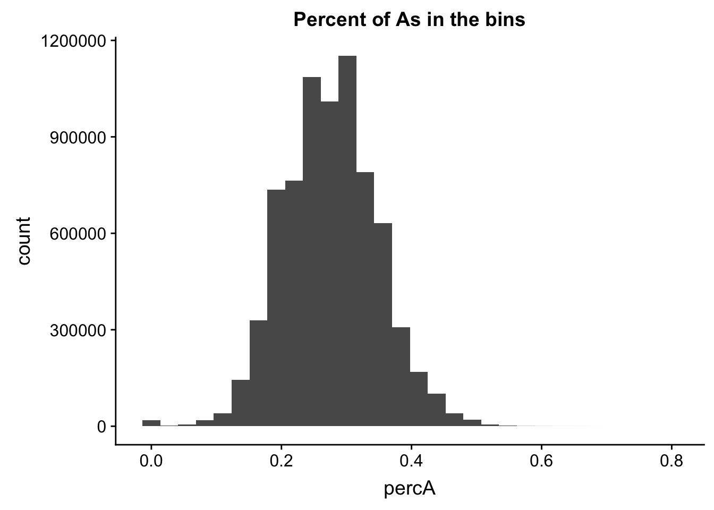
| Version | Author | Date |
|---|---|---|
| 4ef7d85 | Briana Mittleman | 2018-06-11 |
I will apply the same filter as I did in the cov.200bp.wind file. I will keep bins with greater than 0 reads in half of the libraries.
cov_all=read.table("../data/ssFC200.cov.bed", header = T, stringsAsFactors = FALSE)
#remember name switch!
names=c("Geneid","Chr", "Start", "End", "Strand", "Length", "N_18486","T_18486","N_18497","T_18497","N_18500","T_18500","N_18505",'T_18505',"N_18508","T_18508","N_18853","T_18853","N_18870","T_18870","N_19128","T_19128","N_19141","T_19141","N_19193","T_19193","N_19209","T_19209","N_19223","N_19225","T_19225","T_19223","N_19238","T_19238","N_19239","T_19239","N_19257","T_19257")
colnames(cov_all)= names
cov_nums_only=cov_all[,7:38]
keep.exprs=rowSums(cov_nums_only>0) >= 16
cov_all_filt=cov_all[keep.exprs,]
cov_all_filt_bins= cov_all_filt %>% separate(col=Geneid, into=c("bin","gene"), sep=".E") %>% select(bin)
cov_all_filt_bins$bin=as.integer(cov_all_filt_bins$bin)I will intersect the percA file with the bins in the filtered file.
perc_A_bin_filt= perc_A_bin %>% semi_join(cov_all_filt_bins, by="bin")I can no plot the distribution of percA in this.
ggplot(perc_A_bin_filt, aes(percA)) + geom_histogram(bins = 30) + labs(title="Percent of As in the bins after filtering")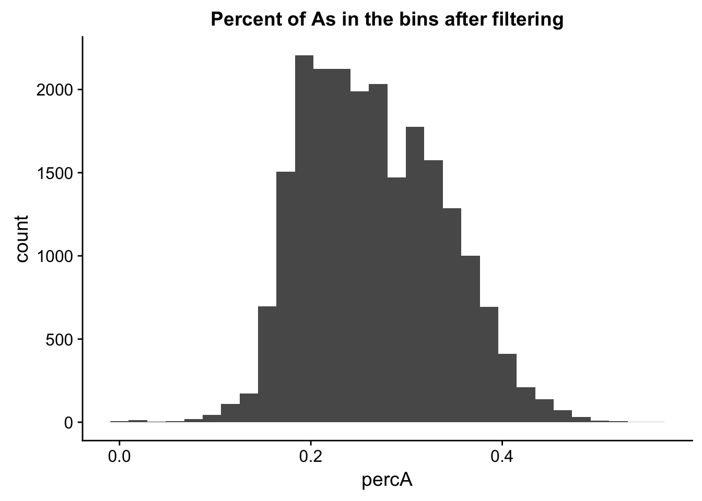
| Version | Author | Date |
|---|---|---|
| 4ef7d85 | Briana Mittleman | 2018-06-11 |
I will compare this distribution to those for other nucleotides. (C)
perc_C_bin=bin_nuccov %>% select("chr", "start", "end","bin", "strand", "gene", "numC") %>% mutate(percC=numC/200)
ggplot(perc_C_bin, aes(percC)) + geom_histogram(bins=30) + labs(title="Percent of Cs in the bins")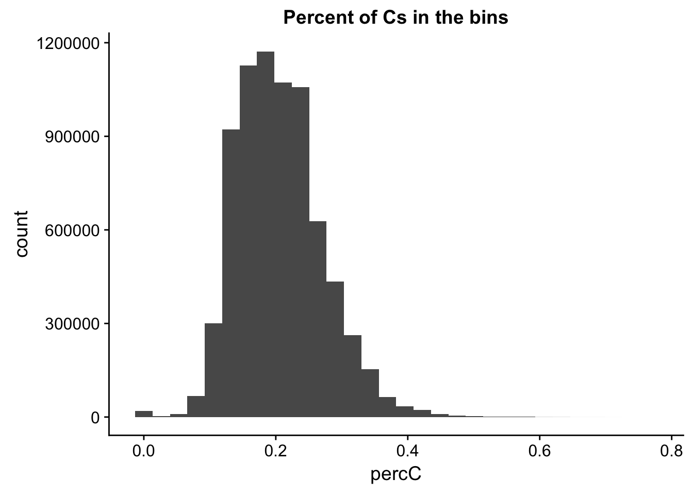
perc_C_bin_filt= perc_C_bin %>% semi_join(cov_all_filt_bins, by="bin")
ggplot(perc_C_bin_filt, aes(percC)) + geom_histogram(bins = 30) + labs(title="Percent of Cs in the bins after filtering")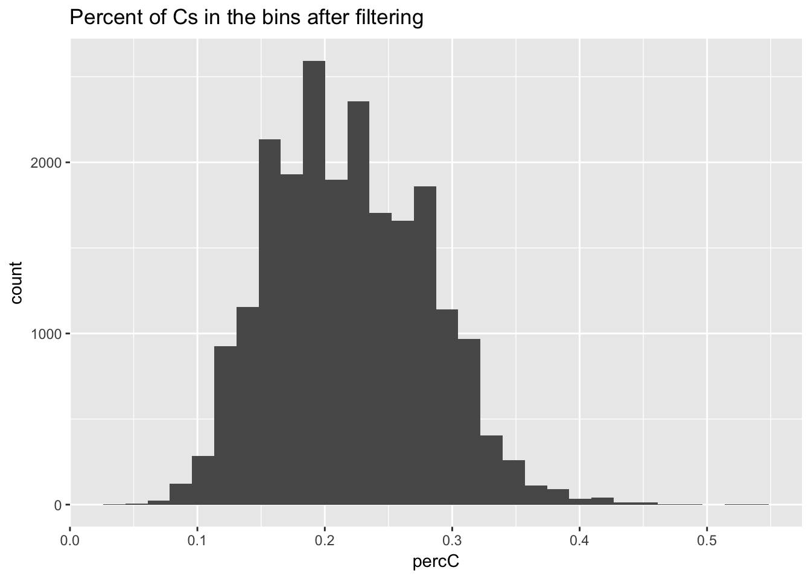 ’ For G
perc_G_bin=bin_nuccov %>% select("chr", "start", "end","bin", "strand", "gene", "numG") %>% mutate(percG=numG/200)
ggplot(perc_G_bin, aes(percG)) + geom_histogram(bins=30) + labs(title="Percent of Gs in the bins")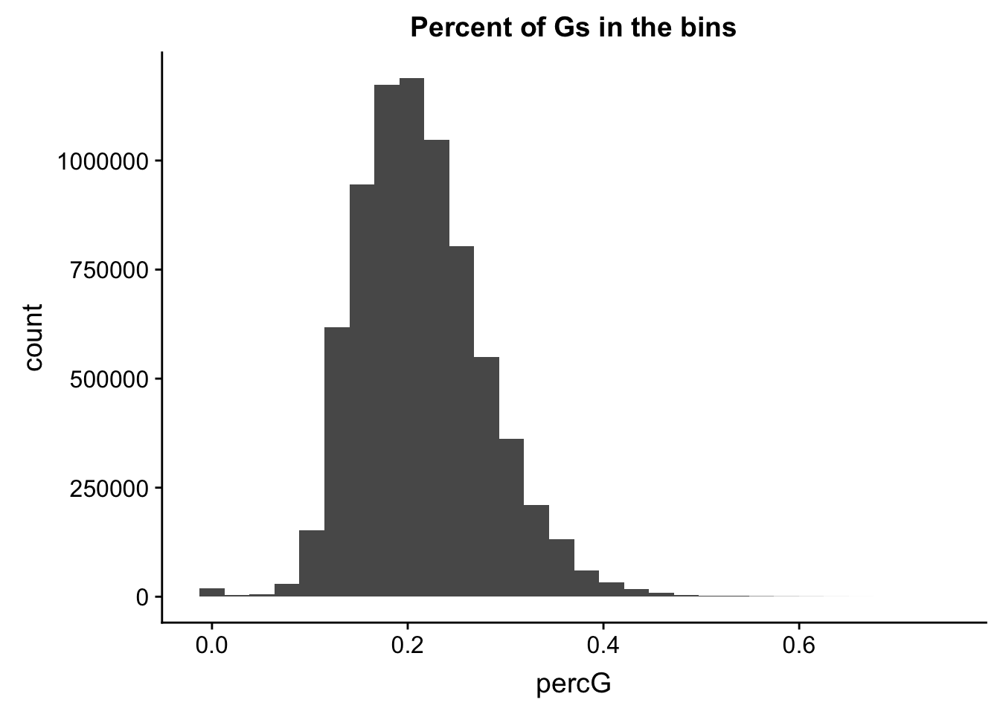
perc_G_bin_filt= perc_G_bin %>% semi_join(cov_all_filt_bins, by="bin")
ggplot(perc_G_bin_filt, aes(percG)) + geom_histogram(bins = 30) + labs(title="Percent of Gs in the bins after filtering")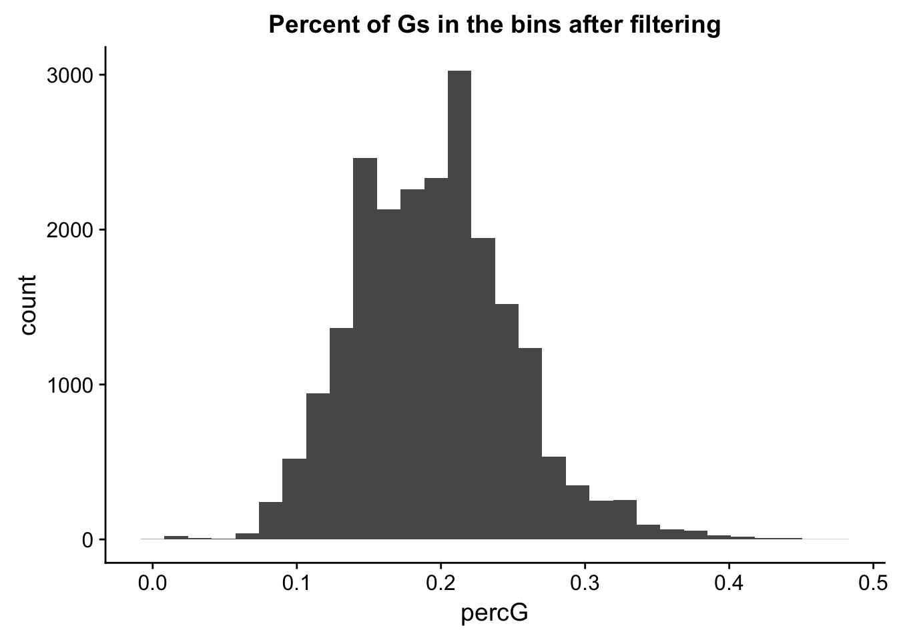
for T
perc_T_bin=bin_nuccov %>% select("chr", "start", "end","bin", "strand", "gene", "numT") %>% mutate(percT=numT/200)
ggplot(perc_T_bin, aes(percT)) + geom_histogram(bins=30) + labs(title="Percent of Ts in the bins")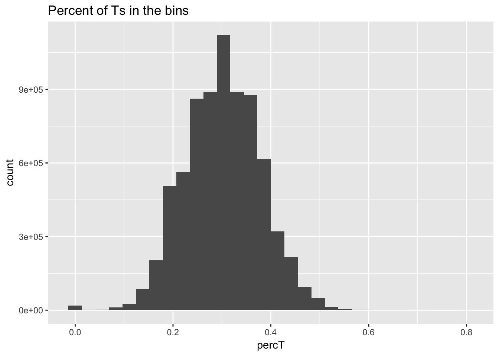
perc_T_bin_filt= perc_T_bin %>% semi_join(cov_all_filt_bins, by="bin")
ggplot(perc_T_bin_filt, aes(percT)) + geom_histogram(bins = 30) + labs(title="Percent of Ts in the bins after filtering")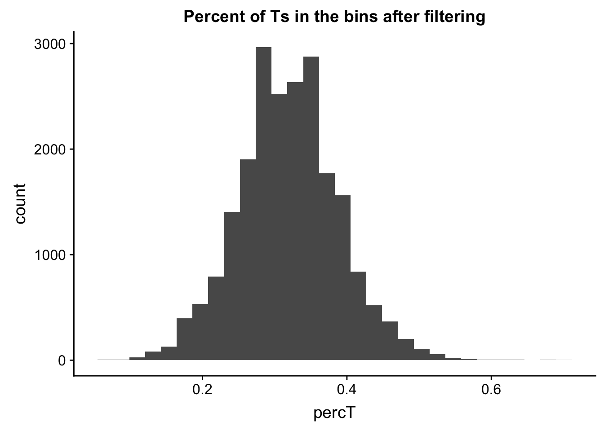
Now I will join all of the percent usage of each nucleotide in the filtered bins so I can plot them on one plot.
percNuc= perc_A_bin_filt %>% left_join(perc_T_bin_filt, by=c("chr", "start", "end", "bin", "strand", "gene")) %>% left_join(perc_G_bin_filt, by=c("chr", "start", "end", "bin", "strand", "gene")) %>% left_join(perc_C_bin_filt, by=c("chr", "start", "end", "bin", "strand", "gene")) %>% select("bin", "percA", "percT", "percG", "percC")
percNuc_melt=melt(percNuc, id.vars = "bin")
ggplot(percNuc_melt, aes(value)) + geom_histogram(bins = 30) + facet_wrap(~variable) + labs(title="Percent each nucleotide in filtered bins")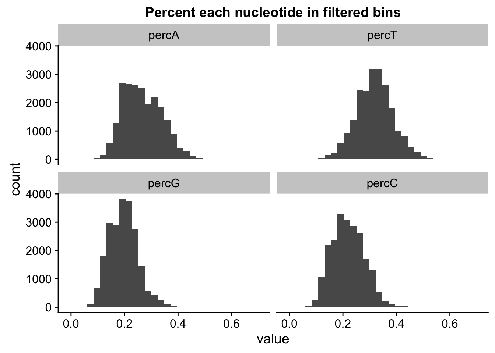
Next check is if the bins have 5 As in a row. I can do this using bedtools nuc as well.
###Five A’s
#!/bin/bash
#SBATCH --job-name=nucA
#SBATCH --time=8:00:00
#SBATCH --output=nucA.out
#SBATCH --error=nucA.err
#SBATCH --partition=broadwl
#SBATCH --mem=20G
#SBATCH --mail-type=END
module load Anaconda3
source activate three-prime-env
bedtools nuc -s -fi /project2/gilad/briana/genome_anotation_data/genome/Homo_sapiens.GRCh37.75.dna_sm.all.fa -bed /project2/gilad/briana/genome_anotation_data/an.int.genome_200_strandspec.bed -pattern "AAAAA" > /project2/gilad/briana/threeprimeseq/data/bin200.5.A.nuccov.bed bin_Anuccov=read.table("../data/bin200.Anuccov.bed")
names(bin_Anuccov)=c("chr", "start", "end", "bin", "score", "strand", "gene", "pct_at", "pct_gc", "numA", "numC", "numG", "numT", "numN", "numOther", "seqlen", "fiveA")
hist(bin_Anuccov$fiveA)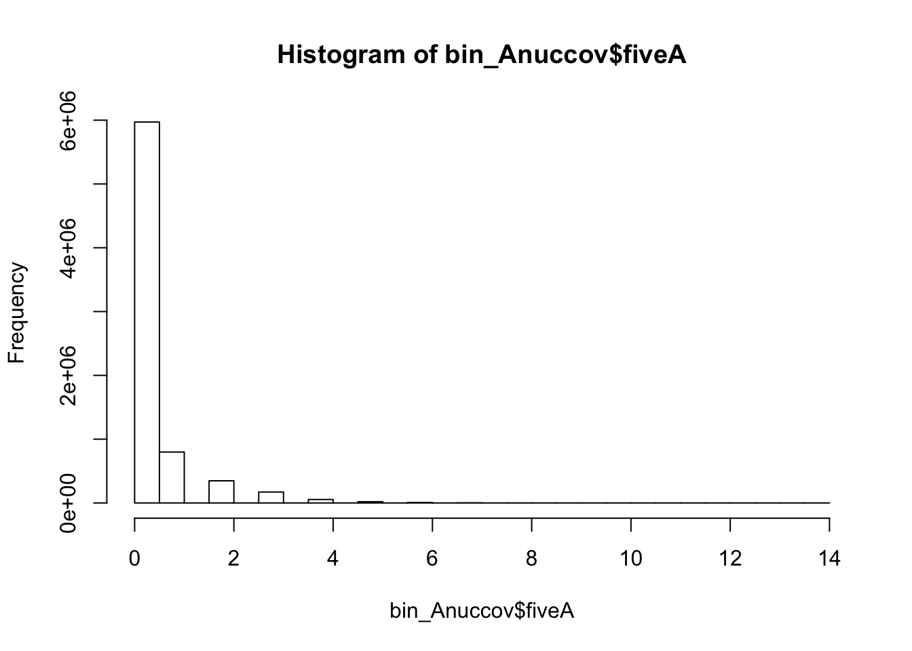
I will filter this the same way I filtered the other file.
bin_Anuccov_filt = bin_Anuccov %>% semi_join(cov_all_filt_bins, by="bin") %>% select( bin, gene, fiveA)
hist(bin_Anuccov_filt$fiveA)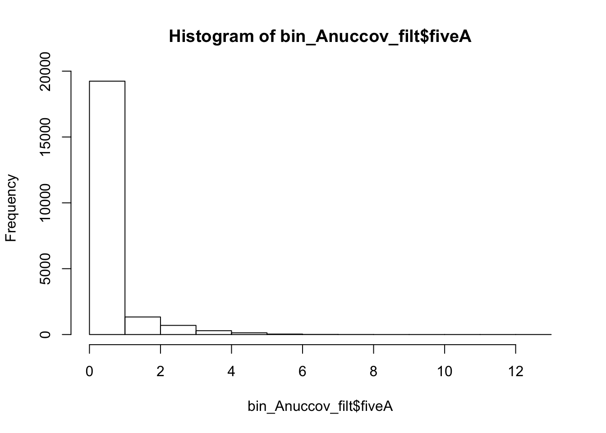
summary(bin_Anuccov_filt$fiveA) Min. 1st Qu. Median Mean 3rd Qu. Max.
0.0000 0.0000 0.0000 0.4404 0.0000 13.0000 Count the number of bins with each value for number of 5 AAAAA
countA_regions= bin_Anuccov_filt %>% group_by(fiveA) %>% count(fiveA)I will compare this to regions with 5 T’s
(This isnt the best comparison because the probability of each of these stretches genome wide may be different)
#!/bin/bash
#SBATCH --job-name=nucT
#SBATCH --time=8:00:00
#SBATCH --output=nucT.out
#SBATCH --error=nucT.err
#SBATCH --partition=broadwl
#SBATCH --mem=20G
#SBATCH --mail-type=END
module load Anaconda3
source activate three-prime-env
bedtools nuc -s -fi /project2/gilad/briana/genome_anotation_data/genome/Homo_sapiens.GRCh37.75.dna_sm.all.fa -bed /project2/gilad/briana/genome_anotation_data/an.int.genome_200_strandspec.bed -pattern "TTTTT" > /project2/gilad/briana/threeprimeseq/data/bin200.5.T.nuccov.bed bin_Tnuccov=read.table("../data/bin200.5.T.nuccov.bed")
names(bin_Tnuccov)=c("chr", "start", "end", "bin", "score", "strand", "gene", "pct_at", "pct_gc", "numA", "numC", "numG", "numT", "numN", "numOther", "seqlen", "fiveT")
summary(bin_Tnuccov$fiveT) Min. 1st Qu. Median Mean 3rd Qu. Max.
0.0000 0.0000 0.0000 0.4191 0.0000 14.0000 bin_Tnuccov_filt = bin_Tnuccov %>% semi_join(cov_all_filt_bins, by="bin") %>% select( bin, gene, fiveT)
hist(bin_Tnuccov_filt$fiveT)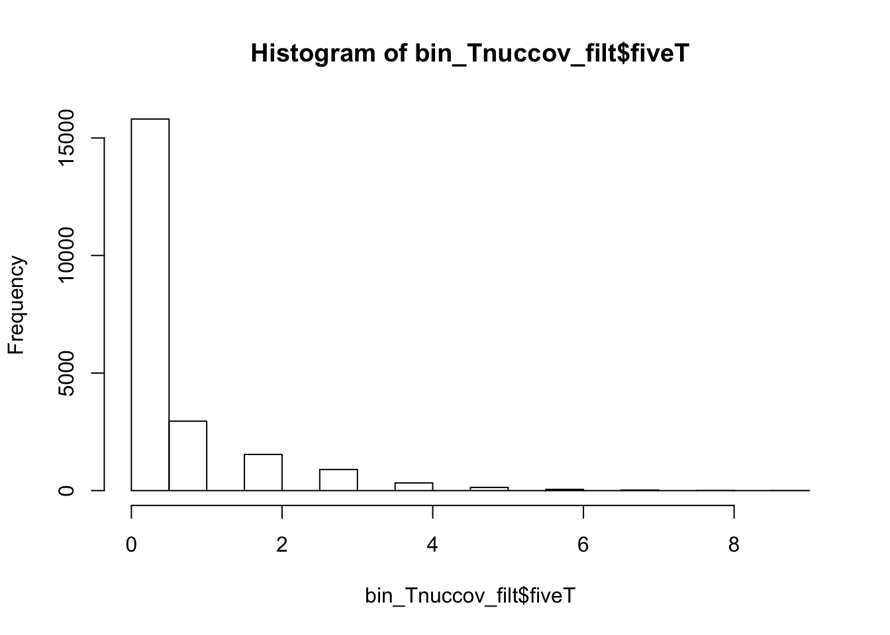
summary(bin_Tnuccov_filt$fiveT) Min. 1st Qu. Median Mean 3rd Qu. Max.
0.0000 0.0000 0.0000 0.5163 1.0000 9.0000 countT_regions= bin_Tnuccov_filt %>% group_by(fiveT) %>% count(fiveT)The numbers are not super different.
sessionInfo()R version 3.4.2 (2017-09-28)
Platform: x86_64-apple-darwin15.6.0 (64-bit)
Running under: macOS Sierra 10.12.6
Matrix products: default
BLAS: /Library/Frameworks/R.framework/Versions/3.4/Resources/lib/libRblas.0.dylib
LAPACK: /Library/Frameworks/R.framework/Versions/3.4/Resources/lib/libRlapack.dylib
locale:
[1] en_US.UTF-8/en_US.UTF-8/en_US.UTF-8/C/en_US.UTF-8/en_US.UTF-8
attached base packages:
[1] stats graphics grDevices utils datasets methods base
other attached packages:
[1] bindrcpp_0.2.2 reshape2_1.4.3 tidyr_0.7.2 dplyr_0.7.5
[5] ggplot2_2.2.1 workflowr_1.0.1 rmarkdown_1.8.5
loaded via a namespace (and not attached):
[1] Rcpp_0.12.17 compiler_3.4.2 pillar_1.1.0
[4] git2r_0.21.0 plyr_1.8.4 bindr_0.1.1
[7] R.methodsS3_1.7.1 R.utils_2.6.0 tools_3.4.2
[10] digest_0.6.15 evaluate_0.10.1 tibble_1.4.2
[13] gtable_0.2.0 pkgconfig_2.0.1 rlang_0.2.1
[16] yaml_2.1.19 stringr_1.3.1 knitr_1.18
[19] rprojroot_1.3-2 grid_3.4.2 tidyselect_0.2.4
[22] glue_1.2.0 R6_2.2.2 purrr_0.2.5
[25] magrittr_1.5 whisker_0.3-2 backports_1.1.2
[28] scales_0.5.0 htmltools_0.3.6 assertthat_0.2.0
[31] colorspace_1.3-2 labeling_0.3 stringi_1.2.2
[34] lazyeval_0.2.1 munsell_0.4.3 R.oo_1.22.0
This reproducible R Markdown analysis was created with workflowr 1.0.1